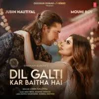
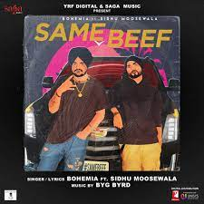

Perfect (26 September 2017)
PLAYED Shareen
PLAYMeri Pukaar Suno (25 July 2021)
A.R Rehman
DIL GALTI (23 June 2022)
PLAY Jubin Nautiyal
ARTISTS
Haal-E-Dil (07 Feburary 1993)
PLAYAlka Yagnik
PLAYUska Hi Bana (17 December 2019)
Arijit Singh
PLAY Same Beef (19 August 2019)
Sidhu Moosewala
PLAY
Tera Zikr (09 November 2017)
Darshan Raval
We Feel Happy if you help us to grow up
PLAYOn My Way (21 March 2019)

Alan Walker
Pachtaoge (23 August 2019)
PLAY VIEW LIST BY RATINGArijit Singh
FEEDBACK ADD MUSIC